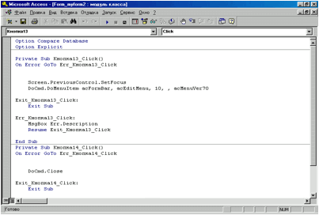
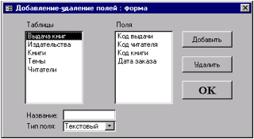
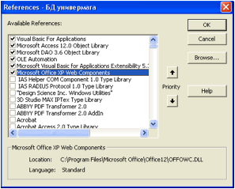

Структурированный полуфункциональный язык программирования высокого уровня VBA является неотъемлемой составной частью MS Access. Он используется для разработки приложений, которые управляют данными в базе, а также для создания и настройки пользовательского интерфейса. В нем, как и в других языках, есть операторы проверки условий, циклического выполнения операций, обмена данными с памятью и дисками. В языке VBA реализованы общие принципы объектно-ориентированного программирования. Это означает, что пользовательская среда, управляемая приложением, не подвергается изменениям путем выполнения последовательности процедур и операторов, но реагирует на события, связанные с различными объектами: полями ввода, кнопками, разделами форм и отчетов. В языке VBA программный код привязан непосредственно к объектам и срабатывает тогда, когда случается определенное событие.
Создание кода VBA с помощью Мастеров элементов управления. Одним из самых распространенных способов использования VBA является привязка кода к элементам управления, добавленным на форму при ее создании, например к кнопке. Чтобы просмотреть код, необходимо выполнить следующее:
1. открыть любую форму, в которой есть кнопки, в режиме Конструктора (например, пусть на форме будет размещено две кнопки – кнопка_13 и кнопка_14, одна из которых осуществляет переходы по записям, а вторая закрытие формы);
2. выбрать команду Программа из меню Вид или найти на панели инструментов иконку редактора VBA (в рассматриваемом примере окно редактора VBA будет иметь вид, представленный на рис. 23).

Рис.
23. Окно редактирования программных модулей
В этом окне отображается три раздела программы на языке VBA: первый раздел – это раздел объявлений, который может содержать код, относящийся ко всей форме в целом (в данном случае пуст), второй раздел относится к кнопке_13, третий – к кнопке_14.
Последние два раздела начинаются с заголовка процедуры (Private Sub Кнопка13_Click () ) и заканчиваются оператором: End Sub.
Операторы, заключенные между ними, выполняются после щелчка по этой кнопке при работе с формой. Основная часть работы выполняется оператором:
DoCmd.DoMenuItem acFormBar, AcEditMenu,10, AcMenuVer70
Этот оператор выполняет те же действия, что и команда меню Найти, т.е. выводит на экран диалоговое окно Поиск в поле.
Открыв, таким образом, программу в редакторе VBA, ее можно редактировать как текст в любом текстовом редакторе. В окне редактора в код можно вставить текст из другого файла, можно вывести текст программы на печать и т.д.
Модули. Модуль является структурным элементом программы, написанной на языке VBA. Это совокупность объявлений и процедур, объединенных в единое целое. Существуют модули трех типов: стандартные модули, модули формы и модули отчетов. В отличие от стандартного модуля, который создается таким же образом, как и любой другой объект БД, и может выполнять практически любые вычисления, модули форм и отчетов разрабатываются для обработки событий, связанных с элементами формы или отчета.
Каждый модуль состоит из области описания и одной или нескольких процедур. Входящие в модуль процедуры объединены общей областью описания. В ней описываются данные и объекты, которые являются общепринятыми для процедур модуля.
Процедуры делятся на две категории: процедуры-подпрограммы (подпрограммы) и процедуры-функции (функции).
Процедура-подпрограмма активизируется при обращении к ней по имени, вследствие чего выполняется определенная последовательность операторов (инструкций). Подпрограмму используют, например, для задания свойства формы или заполнения списка значениями, полученными в результате вычислений.
Процедура-функция после выполнения возвращает некоторое значение, которое можно применять в операторах и выражениях в качестве переменной. Например, функции могут возвращать значение, используемое по умолчанию для некоторого поля, или вычислять сложный критерий в рамках запроса. В модуль можно включать любое количество функций и подпрограмм.
Каждая процедура состоит из операторов, в которых применяются встроенные в MS Access функции, методы и свойства, предназначенные для выполнения каких-либо операций над данными. Например, к свойству Click кнопки _13 приведенного ранее примера привязана следующая процедура:
Private Sub Command6_Click ( )
On
Error GoTo
Err_Command6_Click
Screen.PreviosControl.SetFocus
DoCmd.DoMenuItem acFormBar, acEditMenu,
10, , acMenuVer70
Exit Command6_Click:
Exit Sub
Err_Command6_Click:
MsgBox Err.Descrition
Resume Exit_Command6_Click
End Sub
Для обращения к объектам, а также для обозначения операторов используются ключевые слова, которые записываются с прописной буквы (например, Function).
Теоретически каждая процедура может быть вызвана из любого модуля, а функция – из таких объектов, как форма, запрос или отчет. Наряду с общедоступными процедурами (Public), которыми являются все процедуры по умолчанию, существуют локальные процедуры (Private), доступные только в том модуле, в котором они описаны.
Для передачи значений из вызывающих операторов в вызываемые процедуры служат аргументы. С помощью аргументов ведется контроль выполнения процедуры, устанавливается способ получения результата, определяются параметры вычислений и т.д.
Создание процедур обработки событий. Начинающим разработчикам приложений MS Access понадобится набор процедур для отклика на различные события, например, внесение изменений в поле или щелчок на кнопке. Код процедуры обработки события привязывается к событию, которое может произойти при работе с формой, отчетом или элементом управления. Результат выполнения процедуры-функции обычно применяется:
- в качестве значения по умолчанию для поля таблицы;
- в качестве значения критерия для запросов или фильтров;
- в качестве содержимого поля.
Конкретный вид процедуры зависит от события и желаемого отклика, однако можно предложить общую последовательность действий по созданию процедуры обработки события:
1. Открыть нужную форму или отчет в режиме Конструктора. Если необходимо привязать процедуру к элементу управления, выбрать этот элемент.
2. Выбрать правой кнопкой мыши команду Свойства, чтобы открыть окно свойств формы, отчета или элемента управления.
3. Перейти на вкладку События.
4. Выбрать событие, которое должно запускать процедуру. Например, если процедура должна запускаться в ответ на изменение пользователем данных, выбрать строку После обновления.
5. Выполнить щелчок по кнопке с тремя точками, чтобы открыть окно «Построитель».
6. В этом окне выбрать Программы. Откроется окно редактора VBA, в котором автоматически появятся начальная и конечная строки новой процедуры.
7. Написать программный код процедуры.
Все операторы процедуры записываются с отступом от начала строки. Для создания отступа можно использовать клавишу Tab. По умолчанию позиции табуляции установлены через четыре символа. Посредством отступов выделяют вложенные циклы и условные операторы внутри процедуры.
Тексты программ лучше снабжать комментариями. В начале каждой строки комментария ставится апостроф, и такие строки, как известно, не влияют на выполнение программы, а при синтаксическом анализе и компилировании – пропускаются.
Можно использовать различные шрифты и цвета для выделения фрагментов текста модуля.
Редактирование процедур. Код модуля и тексты подпрограмм/функций редактируются так же, как документы в обычном текстовом редакторе. Для поиска процедуры в тексте модуля используется список процедур, находящийся в верхней части окна модуля.
При перемещении курсора на новую строку программа автоматически проверяет синтаксис введенной строки и в случае обнаружения ошибки выводит на экран соответствующее сообщение.
В MS Access при редактировании кроме общепринятых используются дополнительные комбинации клавиш:
Ctrl+Y – позволяет вставить в буфер строку, в которой находится курсор, не выполняя его маркировку;
F3 или Shift + F3 – позволяют просмотреть все фрагменты модуля, в которых встречается искомая последовательность символов (дублируют команду Найти далее).
Использование аргументов. Благодаря аргументам пользователь имеет возможность управлять выполнением программы. Например, ввод коэффициента при пересчете рублей в доллары в функции с именем Рубли_в_Доллары:
Function Рубли_в_Доллары (Коэффициент)
При вызове такой функции значение аргумента указывается в скобках после имени функции. Например:
=Рубли_в_Доллары (4500)
Вызов процедуры, имеющей аргументы, должен сопровождаться заданием значений для всех объявленных аргументов. Эти значения перечисляются в том же порядке, что и аргументы при объявлении, и разделяются запятыми. В пользовательских функциях или модулях в качестве аргументов могут применяться выражения.
Основные операторы и переменные VBA. Переменные используются для сохранения значений величин, изменяющихся в процессе выполнения программы. Каждая переменная имеет имя, по которому к ней обращаются. Правила присвоения имен переменных аналогичны правилам присвоения имен для полей. Присвоение значения переменной осуществляется посредством оператора присваивания. В левой части оператора указывается имя переменной, а в правой – значение или выражение.
Переменные могут создаваться автоматически, по мере появления в процедуре (неявное объявление). По умолчанию неявно объявленные переменные имеют тип Variant. Внутри такой переменной кроме значения хранится индикатор типа значения.
Неявное объявление типа допустимо только в случае отсутствия оператора Option Explicit в области описания модуля.
Рекомендуется описывать все переменные явно, это позволит избежать ошибок, связанных с преобразованием типов данных. Явное описание типа производится оператором Dim, после которого указывается имя переменной и ее тип. Если при явном объявлении переменной не указан тип данных, а задано только имя переменной, то будет создана переменная типа Variant, которой можно присваивать цепочки символов, числа с плавающей точкой, значения даты и времени. MS Access однозначно идентифицирует присваиваемые значения, поскольку наряду с ними он хранит в переменной и признак типа.
Типы данных и размер хранимых значений, которые используются в MS Access, можно найти в справочной информации приложения.
Для объявления нескольких переменных можно пользоваться одним оператором Dim, перечисляя их через запятую.
При объявлении переменной следует помнить об области действия. Переменные, объявленные в процедуре, можно использовать только внутри этой процедуры. Если переменная должна быть доступна во всех процедурах одного модуля, ее необходимо объявить в области описания модуля. Здесь также можно применять оператор Dim. Наибольшую область действия имеет переменная, объявленная глобальной (с префиксом Global) в области описания модуля. Синтаксис оператора Global не отличается от синтаксиса оператора Dim.
В отличие от переменной константа содержит фиксированное значение, которое не может быть изменено в процессе выполнения программы. Константы, как и переменные, следует объявлять явно, указывая их имена и значения. Для объявления константы используется оператор Const. Объявленную константу можно использовать в программе, обращаясь к ней по имени. Например:
Const Число_Пи = 3.1415926
Условные операторы. В языке VBA, как и в других языках программирования, основными элементами, управляющими ходом выполнения процедуры, являются условные операторы. Наиболее простой из них – оператор If … Then:
If Полина = "Ж" Then
Поздравление = "С 8 марта!"
End if
Если условие, заданное выражением между ключевыми словами If и Then, выполняется, соблюдаются инструкции внутри блока, ограниченного ключевыми словами Then и End if. Иначе операторы между ключевыми словами не выполняются, а программа переходит к обработке оператора, который следует за ключевыми слова End if. В случае необходимости произвести два различных действия (одно при соблюдении условия, а второе – нет), надлежит воспользоваться полной формой оператора If:
If выражение Then
Оператор1
Else
Оператор2
End if
Если условие соблюдается, выполняется Оператор1 (или группа операторов), расположенный между ключевыми словами Then и Else, а если не соблюдается – Оператор2 (или группа операторов), расположенный между ключевыми словами Else и End if.
Для выбора одного из множеств вариантов решений используется оператор Select Case:
Select Case Город
Case "Киев"
Код_МГТС = "044"
Case "Москва"
Код_МГТС = "095"
Case "Запорожье"
Код_МГТС = "061-2"
Case Else
Print "Я не знаю такого города!"
End Select
При выполнении этого оператора проверяется значение переменной Город. В зависимости от результата проверки переменной Код_МГТС присваивается телефонной код некоторого города. Если значение переменной Город не совпадает ни с одним из значений, перечисленных в строках с ключевым словом Case, производится действие, указанное между ключевыми словами Case Else и End Select.
Операторы цикла. Цикл используется для многократного повторения одной или нескольких инструкций. Количество повторений цикла связано с некоторым условием. В VBA предусмотрено несколько видов циклов. Простейшим примером циклической конструкции является цикл по счетчику:
For Счетчик = 1 To 10
Print Счетчик
Next Счетчик
Цикл по счетчику ограничивается ключевыми словами For и Next. После ключевого слова For указывается имя переменной, которая будет выполнять роль счетчика, после знака равенства – начальное значение счетчика, а после ключевого слова To – конечное значение счетчика.
Еще один вид цикла – Do While. Условие выполнения команд внутри такого цикла определяется некоторым условным оператором:
Do While Счетчик <> 10
Loop
Разновидностью цикла Do является Until, который выполняется, пока условное выражение ложно:
Do Until Счетчик=10
Счетчик=Счетчик+1
Loop
Макросы. Макросом называется набор из одной или более макрокоманд, выполняющих определенные операции. Выполнение макроса возможно:
- из окна базы данных: на вкладке Макросы следует нажать кнопку Запуск;
- при возникновении определенного события некоторого объекта, например, нажатие кнопки. В этом случае макрос выполняется автоматически.
Макрос является удобным средством выполнения простых задач, таких как открытие или закрытие форм, вывод на экран и скрытие панелей инструментов, запуск отчетов и т. д.
Макросу присваивается заданное пользователем имя. Если макросу присвоить стандартное имя, например, Autoexec, то такой макрос будет выполняться автоматически сразу же после загрузки MS Acces.
Макрос может состоять из одной или нескольких макрокоманд. Процедура создания макроса в основном состоит в выборе макрокоманд и определении их параметров. Для создания макроса следует:
- в окне БД на вкладке Макросы нажать кнопку Создать;
- на панели макрокоманд в ячейке столбца Макрокоманда выбрать из раскрывающегося списка имя макрокоманды;
- в ячейку столбца Примечание ввести текст комментария к макрокоманде (необязательно);
- в нижней половине окна указать аргументы макрокоманды.
Имеющиеся в MS Access макрокоманды можно классифицировать по назначению следующим образом:
- макрокоманды перемещения по данным;
- макрокоманды выполнения макроса, процедуры или запроса;
- макрокоманды прерывания выполнения;
- макрокоманды экспорта-импорта;
- макрокоманды работы с объектами;
- прочие макрокоманды.
Макрокоманды выполняются в порядке их расположения в бланке. Однако MS Access позволяет задать условие выполнения определенных макрокоманд. Условие задается в столбце Условие (для вывода столбца следует выполнить команду Условие меню Вид) и представляет собой условное выражение. Условное выражение можно ввести с клавиатуры или задать с помощью построителя выражений. В ячейках столбца Условие нельзя использовать выражения SQL.
При запуске макроса проверяется значение каждого условного выражения. Если это выражение истинно, выполняется макрокоманда, находящаяся в той же строке, и все следующие макрокоманды, у которых в ячейках столбца Условие содержится многоточие (...). Если условное выражение ложно, MS Access проигнорирует эти макрокоманды и перейдет к ближайшей строке, в которой содержится новое условие или ячейка условий является пустой.
MS Access позволяет объединять группу родственных макросов в один макрос. В этом случае макет макроса (окно макроса в режиме конструктора) должен содержать столбец Имя макроса. Чтобы его вывести, следует выполнить команду Имена макросов меню Вид. Для запуска макроса из группы макросов следует указать: Имя Группы макросов. Имя Макроса.
1. Написать программный код для добавления полей в таблицу, следуя приведенному ниже примеру (поля будут добавляться только в таблицу «Книги»):
а) Создать новую форму в режиме Конструктора, в которой будут размещаться элементы управления, предназначенные для добавления поля.
б) Выбрать элемент управления Поле на панели элементов управления, предназначенный для ввода имени добавляемого поля и поместить его в области данных формы.
в) Изменить свойства созданного элемента управления, для чего правой кнопкой мыши щелкнуть по нему и выбрать в появившемся списке - Свойства. В качестве имени поля указать Field_Name.
г) Отредактировать надпись слева от созданного поля ввода. В свойствах изменить подпись на Название поля:. Для того, чтобы подпись полностью вмещалась ширину поля указать 2,6 см.
д) Создать элемент управления, в котором будет содержаться перечень возможных типов данных для добавляемого поля. Для этого выбрать на панели элементов Поле со списком и поместить его на форму. Следуя за работой Мастера в предложенном списке способов заполнения элементов списка выбрать Будет введен фиксированный набор значений и нажать кнопку Далее. Число столбцов оставить равным единице. В качестве элементов списка указать «Текстовый», «Числовой», «Дата/время». Нажать кнопку Далее, в качестве подписи указать Тип поля: и нажать кнопку Готово.
е) В свойствах созданного поля со списком изменить Название поля на Field_Type.
ж) Создать кнопку, с которой будет связана программа добавления поля. Выбрать элемент управления Кнопка и поместить ее на форме. При работе с Мастером будет предложен список действий, которые должны выполняться при нажатии на данную кнопку. Поскольку готовой программы для добавления полей нет, то нажать кнопку Отмена.
з) Открыть свойства созданной кнопки. Подпись изменить на Добавление поля, Имя на Add. На вкладке События выбрать строку Нажатие кнопки. Слева от поля нажать кнопку с тремя точками и в появившемся диалоговом окне выбрать Программы, нажать кнопку ОК. Открывшееся окно редактирования программ VBA содержит следующие строки:
Option Compare Database
Option Explicit
Private Sub Add_Click ()
End Sub
Установить курсор в пустую строку после строки Private Sub Add_Click ().
и) Далее необходимо получить доступ ко всей БД в целом и к нужной таблице в частности, предусмотреть, где будет содержаться информацию о новом поле. Для этого объявить следующие переменные:
Dim dbs As Database, tdf As TableDef, fld As Field
Переменная dbs имеет тип Database и предназначена для получения указателя на базу данных, переменная tdf имеет тип TableDef – для получения указателя на таблицу, переменная fld имеет тип Field – для получения указателя на поля таблицы.
к) Установить указатель на текущую базу данных:
Set dbs = CurrentDb
Ключевое слово CurrentDb означает, что будет использоваться информация из текущей БД.
л) Установить указатель на таблицу:
Set tdf = dbs.TableDefs
("Книги")
Обратите внимание, что ввод точки после dbs приводит к выводу перечня переменных и функций текущей БД. Выбранная функция TableDefs предназначена для получения указателя на указанную таблицу.
м) В зависимости от выбранного типа данных организовать создание нового поля в таблице. Для организации условного перехода внутри программы воспользуемся оператором Select Case:
Select
Case Field_Type.Value
Case
"Текстовый"
Set fld=tdf.CreateField
(Me.Field_Name, dbText)
Case
"Числовой"
Set fld=tdf.CreateField
(Me.Field_Name, dbLong)
Case
"Дата/время"
Set fld=tdf.CreateField
(Me.Field_Name, dbDate)
End Select
В зависимости от значения поля со списком Field_Type происходит создание поля с выбранным типом. Для создания поля используется метод CreateField. Созданное поле размещается в переменной fld. Ключевое слово Ме означает, что следующее за ним поле принадлежат текущей форме.
н) добавить новое поле в таблицу с помощью команд:
tdf.Fields.Append fld
tdf.Fields.Refresh
Первая команда предназначена для добавления информации о новом поле в таблицу, вторая – для обновления произведенных изменений.
Полностью программа имеет следующий вид:
Private Sub Add_Click ()
Dim dbs As Database, tdf As TableDef, fld As Field
Set dbs = CurrentDb
Set tdf = dbs.TableDefs
("Книги")
Select Case Field_Type.Value
Case "Текстовый"
Set fld=tdf.CreateField
(Me.Field_Name, dbText)
Case "Числовой"
Set fld=tdf.CreateField
(Me.Field_Name, dbLong)
Case "Дата/время"
Set fld=tdf.CreateField
(Me.Field_Name, dbDate)
End Select
tdf.Fields.Append fld
tdf.Fields.Refresh
End Sub
о) после написания программы закрыть текущее окно, сохранить форму и открыть ее в режиме просмотра.
р) проверить работу программы: в качестве названия поля ввести «Test», в качестве типа указать «Текстовый». Нажать кнопку «Добавление поля», а затем открыть таблицу «Книги» и убедиться в присутствии нового поля.
2. Аналогично написать программу для удаления полей из таблицы «Книги»:
а) Открыть форму в режиме Конструктора.
б) Выбрать элемент управления Список на панели элементов управления для отображения названий полей таблицы и поместить его в области данных формы. При работе с Мастером из предлагаемых способов заполнения элементов списка выбрать Будет введен фиксированный набор значений и нажать кнопку Далее. Число столбцов оставить равным единице. В качестве элементов списка указать поля Автор, Название, Код издательства, Объем, Год издания, Стоимость, Test. Поле Код книги лучше не добавлять, так как оно является ключевым и не может быть удалено из таблицы. Нажать кнопку Далее, в качестве подписи указать Список полей и нажать Готово. При необходимости выровнять размер подписи.
в) В свойствах созданного Списка изменить его Имя на Fields.
г) Создать кнопку, которая будет связана с программой удаления поля. На панели элементов выбрать элемент управления Кнопка и поместить ее на форме. При работе с Мастером нажать Отмена, когда будет предложено выбрать выполняемое действие при нажатии на кнопку.
д) В свойствах созданной кнопки Подпись изменить на Удаление поля, Имя на Del и открыть программу обработки события в строке Нажатие кнопки. Установить курсор после строки Private Sub Del_Click (). Написать программу обработки события:
Private Sub Del_Click ()
Dim dbs As Database, tdf As TableDef
Set dbs = CurrentDb
Set tdf = dbs.TableDefs
("Книги")
tdf.Fields.Delete (Me.Fields.Value)
tdf.Fields.Refresh
End Sub
е) Сохранить форму и открыть ее в режиме просмотра.
ж) выбрать созданное ранее поле Test и нажать кнопку Удаление поля. В таблице «Книги» убедиться, что поле удалено.
3. Создать форму (рис. 24) , в которой:
а) Реализовать добавление и удаление любого поля (кроме ключевых) из любой таблицы.
б) В качестве возможных типов данных добавляемых полей должны быть: «Текстовый», «Числовой», «Дата/время», «Денежный», «Логический», «Поле MEMO».
в) Перед удалением поля (при нажатии соответствующей кнопки Удалить) программно реализовать запрос на подтверждение удаления выбранного поля в виде пользовательского сообщения в диалоговом окне (функция MsgBox). Поле удалять только в случае согласия.
г) Обеспечить обновление Списка полей таблицы и поля ввода имени нового поля на форме после добавления/удаления полей в выбранной таблице.
д) Предусмотреть программную защиту и вывод пользовательских сообщений (функция MsgBox) при попытке удаления ключевых полей; при добавлении уже существующих полей; при попытке добавления полей с неуказанным именем или типом данных.
е) запрограммировать возможность открытия любой таблицы из созданной формы для просмотра внесенных изменений.

Рис. 24
Форма для добавления и удаления полей
4. Создать аналогично п.3 форму-мастер и под нее на VBA программу, позволяющую добавлять и удалять любые не ключевые поля в любой из таблиц БД индивидуального задания. При этом должна изменяться только структура таблиц, отображать изменение состава полей на формах не следует. Просмотр изменений в таблицах должен осуществляться с формы-мастера. Все производимые действия на форме должны сопровождаться контекстными сообщениями, направляющими работу пользователя с мастером.
Примечание. Иногда в программе могут возникать ошибки, связанные с отсутствием подключения какой-либо библиотеки VBA. На рис. 25 приведен пример правильного и достаточного для нормальной работы перечня компонентов, который выбирается в меню редактора VBA Tools - References

Рис. 25
1. Что такое VBA?
2. Назовите основные принципы ООП
3. Как происходит привязка программы к элементам управления на форме?
4. Какими возможностями обладает редактор VBA, как он открывается?
5. Что такое модуль, какие типы модулей существуют?
6. Чем отличаются процедуры-функции от процедур-подпрограмм?
7. Привести пример использования аргументов функции
8. Назвать основные условные и циклические операторы VBA
9. Что такое макрос, как его создать?
10. Какие виды макросов по их назначению можно выделить?